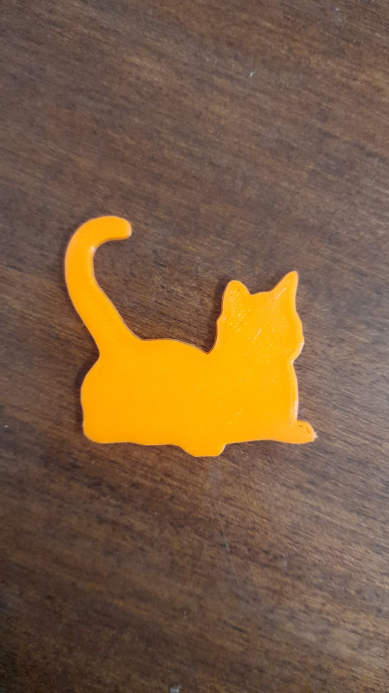
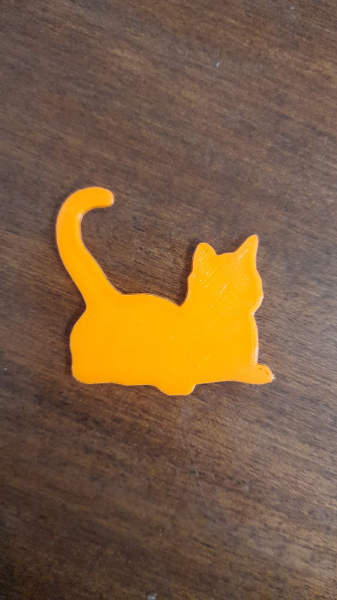

MISIÓN 2
SIMULACRO DE CRISIS ODS
Segunda misión, Simulacro de crisis global (ODS) una actividad en grupo nuevamente (al azar) conformado por 4 personas de distintas carreras. Lo primero que hicimos fue escoger la ODS con la que trabajaríamos de forma aleatoria, la que nos tocó trabajar fue "14 VIDA SUBMARINA" con mi equipo trabajamos rápidamente para encontrar una marca que represente bien a esta ODS, encontramos una llamada "RUBYMOON" marca comprometida con el planeta y curiosamente cumpliendo las 17 ODS, pero principalmente la 14 que era de la que teníamos que hablar, gestionamos rápidamente nuestro trabajo en equipo y pudimos terminar rápidamente el papelote, nos dividimos el trabajo y nos organizamos luego, compartiendo opiniones y decidiendo que decir, fuimos os 2dos en exponer y nos fue muy bien, así fue como finalizo nuestra actividad. Simultáneamente a esto imprimí por 2da vez y ahora configuré sola la impresora para poder mandar mi pieza, se imprimió exitosamente. |
 
 |
MISIÓN 3
IDEA PERSONAL
Tercera misión, Idea personal (actividad individual) el docente nos brindó una hoja de papel para poder plasmar una idea revolucionaria y brindar soluciones a una problemática, se tenía que especificar qué es lo que necesitabas para desarrollarla (carencias) y por último lo que tu podías ofrecer. Seguido a eso se generó una actividad para exponer por puntos, vender de manera correcta la idea de un compañero al azar y dar a conocer que es lo que necesiten (carencias) para que así todos tengan conocimiento de los talentos y necesidades del compañero. Finalmente se dio a conocer a los 3 primeros ganadores, pues todos en el salón votaron por sus favoritos, ¡obtuve el primer lugar gracias a los votos de mis compañeros! |
 |